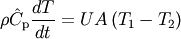
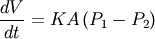

3.2. The rmg.system.batch Module¶
Contains classes that represent batch reaction systems.
3.2.1. Classes in rmg.system.batch¶
3.2.1.1. BatchReactor¶
- class rmg.system.batch.BatchReactor¶
A reaction system consisting of a single well-mixed batch reactor. The reactor can be configured to be isothermal, adiabatic, or having a known overall heat transfer coefficient; isobaric, isochoric, or having a known coefficient of expansion.


The attributes are:
Attribute Description volume The reactor volume in m^3 area The total surface area of the reactor in m^2 heatTransferCoeff The overall heat transfer coefficient of the reactor in W/m^2*K expansionCoeff The coefficient of expansion in m/s*Pa initialTemperature The initial temperature in K initialPressure The initial pressure in Pa initialMoleFraction Dictionary of initial mole fraction for each species; those not in dictionary have initial mole fraction of zero reservoirTemperature The reservoir temperature in K reservoirPressure The reservoir pressure in Pa - getNetworkLeakFluxes(model, P, V, T, Ni, criticalFlux)¶
- Returns True if model is valid given the set of species fluxes dNidt and the critical flux criticalFlux. Also returns the edge species whose flux is greatest, and that flux.
- getReactionRates(P, V, T, Ni, model)¶
- Evaluate the reaction rates for all reactions in the model (core and edge).
- getSpeciesFluxes(model, P, V, T, Ni, stoichiometry)¶
- Determine the species fluxes of all species in the model core and edge at the specified pressure P, volume V, temperature T, and numbers of moles Ni. The stoichiometry parameter is the stoichiometry matrix for the model.
- initializeCantera()¶
- Creata a Cantera instance. Call this once
- isModelValid(model, dNidt, criticalFlux)¶
- Returns True if model is valid given the set of species fluxes dNidt and the critical flux criticalFlux. Also returns the edge species whose flux is greatest, and that flux.
- postprocess(model, t, y, dydt, label='')¶
- Postprocess the results of a simulation. This function generates a number of plots: temperature, pressure, volume, and concentration profiles. The parameters are the reaction model, the list of times t, the list of state vectors y, and an optional label for the reaction system.
- printSimulationStatus(model, t, y, y0, charFlux, maxSpeciesFlux, maxSpecies)¶
- Log a line of text describing the current status of the simulation. The information logged is the current time t, the current conversion of all species being monitored for conversion targets, the characteristic flux charFlux, the maximum species flux maxSpeciesFlux, and the species with that flux maxSpecies.
- runCantera(model)¶
- Execute a simulation of the reaction system in Cantera. The procedure: (1) write a CTML (Cantera) file, (2) read it into Cantera, (3) create the reactor in Cantera, and (4) return the simulation results.
- setAdiabatic()¶
- Sets the reactor to use an adiabatic model for temperature. This is achieved by setting the overall heat transfer coefficient to zero.
- setIsobaric()¶
- Sets the reactor to use an isobaric model for pressure. This is currently achieved by simply choosing a very large coefficient of expansion.
- setIsochoric()¶
- Sets the reactor to use an isochoric model for volume. This is achieved by setting the coefficient of expansion to zero.
- setIsothermal()¶
- Sets the reactor to use an isothermal model for temperature. This is currently achieved by simply choosing a very large heat transfer coefficient.
- simulate(model)¶
Conduct a simulation of the current reaction system using the core-edge reaction model model.
Edge species fluxes are tracked, relative to the characteristic core flux at that time, throughout the simulation. If one exceeds model.fluxToleranceInterrupt the simulation is interrupted, and that species is returned. The highest relative flux reached by each species during the simulation is stored for later analysis. If one or more of these exceed model.fluxToleranceMoveToCore then the species with the highest will be returned.
If the simulation completes without interruption, then any that fall below model.fluxToleranceKeepInEdge will be removed from the edge, along with the reactions that involve them.
Returns: (tlist, ylist, dydtlist, valid?, Edge_species_with_highest_flux)